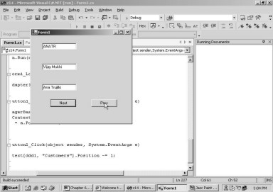
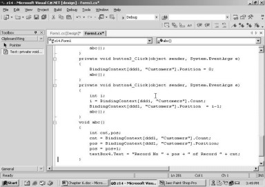

6. The C# code in .Net
Applications
In the previous chapter, we had
explored all that was required to be learnt and discovered about C#, in order to
understand the code generated by the Framework. A crucial point that screams
for attention is, that any application built in Visual Studio.Net with Project
Type as Visual C#, eventually is converted into C# code. In this chapter, we
will build applications in Visual Studio.Net, and at every stage thereon, we
shall explain the code generated by the .Net Framework. We could have written
the same code manually, but it certainly gives our productivity a boost, if the
code is automatically generated by the system.
Let us revert back to Visual
Studio.Net, to create a new application. As always, click on menu File - New -
Project. In the dialog box, select Visual C# Project in Project Type pane, and
Windows Application in the Template pane. Enter the name z10, and ensure that
the location is set to c:\mukhi. On pressing F5 to run the application, you
will come across a completely blank window.
When you navigate into the
folder c:\mukhi\z10, you will encounter a large number of files, created by
this framework. One of the many files created, is named as Form1.cs. This is
similar to the .cs file, which was created in the previous chapter. Now, run
the compiler using the command
>Csc Form1.cs
The compiler creates an exe file
named Form1.exe, which when executed, reveals the same window, as is seen with
the F5 command. The program Form1.cs has been generated by Visual Studio.Net,
which internally calls the C# compile and creates the executable file. Pressing
F5 runs the executable. Let us now
attempt at understanding the code, that gets generated in Form1.cs.
Form1.cs
using System;
using System.Drawing;
using System.Collections;
using System.ComponentModel;
using System.Windows.Forms;
using System.Data;
namespace z10
{
/// <summary>
/// Summary description for Form1.
/// </summary>
public class Form1 : System.Windows.Forms.Form
{
/// <summary>
/// Required designer variable.
/// </summary>
private System.ComponentModel.Container components = null;
public Form1()
{
//
// Required for Windows Form Designer support
//
InitializeComponent();
//
// TODO: Add any constructor code after InitializeComponent call
//
}
/// <summary>
/// Clean up any resources being used.
/// </summary>
protected override void Dispose( bool disposing )
{
if( disposing )
{
if (components != null)
{
components.Dispose();
}
}
base.Dispose( disposing );
}
#region Windows Form Designer generated code
/// <summary>
/// Required method for Designer support - do not modify
/// the contents of this method with the code editor.
/// </summary>
private void InitializeComponent()
{
this.components = new System.ComponentModel.Container();
this.Size = new System.Drawing.Size(300,300);
this.Text = "Form1";
}
#endregion
/// <summary>
/// The main entry point for the application.
/// </summary>
[STAThread]
static void Main()
{
Application.Run(new Form1());
}
}
}
We hope to be able to refresh your
memory by reiterating that, the above program has been written by the C#
compiler, and not by us. The file reveals a large number of statements
beginning with the term 'using'. For those of you who tuned in late, the
'using' statements are inserted to ease the typing effort. The name of a
namespace is provided after the 'using' keyword, so that the namespace is not
required to be inserted before each 'class.function name' combination. As the
project has been named z10, the entire C# program is depicted as enclosed
within the namespace of z10. Since the solitary role of a namespace is to
ensure that the class names in one project, do not clash with class names in
the other projects, it can safely be overlooked.
You may recollect that in the
last chapter, we had gathered that any line beginning with three slashes, is an
XML comment. This program appears very large, due to the comments inserted at
every possible nook and corner. More often than not, comments are not of much
utility, since they are computer generated; and thus, lack the essential human
touch. In future, we will strip-off all comments, before displaying the code.
A class known as Form1, which is
derived from the class Form, contains all the code required for the current project.
In spite of employing the term 'using', which includes System.Windows.Forms,
the code generated, still contains the full name of the class. It is absurd and
illogical, but then; computers are not expected to generate code that makes
perfect sense. In the first place, an instance variable called 'components' in
the class, has been initialized to 'null', which represents no value. The
'private' modifier limits the access only to the members of the current class.
The Run function, located in the
Main function, is called after passing it an object, which is an instance of
Form1. The newly created object calls the constructor of the Form1 class, and
then, it calls the Run function. The constructor simply calls a function named
InitializeComponent.
But prior to this, study the
square brackets above the Main function closely. It represents an 'attribute'.
Attributes have a range of functions, which undertake certain tasks, such as,
determining the wherewithal of generating the code with the aid of the compiler,
or documenting the classes in the executable file, etc. We shall not venture
into the details of the attribute [STAThread], however, for those burning with
curiosity, it suffices to say that the full form of STA is Single Threaded
Apartment. It implies that, once a window is created in a thread, it will not
be permitted to switch to another thread. If you are unable to comprehend the
finer nuances of the above statement, then cheer up, you have company!
It is in this function, that all
the form widgets get initialized. We employ this function, only in the event of
initializing the object components. The computer program that generated the
code, prefixed all the instance variables with the term 'this'. In this case,
eliminating the term 'this', does not affect the outcome. The class Form has a
large number of instance variables, such as Size and Text, which we are
entitled to be used in the class Form1.
The Size variable or Size
property, determines the size of the initial window, while the Text property
decides the title of the window. The 'this' keyword is optional. A point to be
noted is that, all properties have a default value. No sooner do we change a
single property in the Property window, a line gets inserted in the
InitializeComponent function. The Size property is initialized to a Size
object, which is passed the width and height of the window in pixels. Thus, a
GUI is used to build applications and all actions get converted into C# code.
The next function called
Dispose, can only be called by the system, as and when it is required. A
programmer does not enjoy the facility of calling it manually. We are
completely aware about the circumstances under which a constructor gets called.
Further, we also know unequivocally, that the Dispose function gets called,
when the resources in the program are to be disposed off. But, we are not aware
as to when this disposal takes place; in other words, when is an object going
to die. In C#, unlike C++, there is no control at all, over the termination of an
object. The Garbage Collector is solely responsible for removing an object from
memory; thereby, shielding the programmer from carrying out any memory
management chores. The Dispose function can also be ignored, since it merely
calls the Dispose function from the Components object and the base class.
Hence, the use of keyword 'base' can be explained. In our next display, we do
not intend to expose you to the Dispose function any longer.
Now, its time we got back to
Visual Studio.Net. Double click on the form. As is always the case, the Code
Painter gets displayed. Now, press Ctrl+Home to move to the beginning of the
page, or scroll up till the first line is visible.
|
Screen 6.1 |
Screen 6.1 presents the code
that is displayed in our window. Here, we discern a list of 'using' statements
and a minus sign, extending over an entire span of six 'using' statements. Now,
click on the minus sign, and observe your screen change its display, as shown
in screen 6.2.
|
Screen 6.2 |
To our utter astonishment, all
the 'using' statements vanish, and what is remnant is a plus sign and the term
'using', with a series of dots as residues. Thus, the editor is conscious of
how it has to work with the C# language. It is not merely a word processor, but
a word processor that knows and discerns the C# programming language, better
than we do. The words, also known as keywords, that are a part of the C#
language, are depicted in a different color. Also, every separate entity begins
with a minus sign. Now, click on the minus sign in front of class. Screen 6.3
displays the Code Painter.
|
Screen 6.3 |
Clicking on the minus sign of
the class, compresses it into a series of dots. This signifies that it is the
class that encapsulates all the code. We can compress any entity in C# and
thereby, remain at the level of detail we are comfortable with. With a small
screen, we need to be very selective about the level of detail that can be
displayed. Now, incorporate a button onto the Form Design and double click on
it. The addition of a button, results in a variation in the code also. The
program is shown below.
Form1.cs
using System;
using System.Drawing;
using System.Collections;
using System.ComponentModel;
using System.Windows.Forms;
using System.Data;
namespace z10
{
public class Form1 : System.Windows.Forms.Form
{
private System.Windows.Forms.Button button1;
private System.ComponentModel.Container components = null;
public Form1()
{
InitializeComponent();
}
protected override void Dispose( bool disposing )
{
if( disposing )
{
if (components != null)
{
components.Dispose();
}
}
base.Dispose( disposing );
}
#region Windows Form Designer generated code
private void InitializeComponent()
{
this.button1 = new System.Windows.Forms.Button();
this.SuspendLayout();
this.button1.Location = new System.Drawing.Point(40, 64);
this.button1.Name = "button1";
this.button1.TabIndex = 0;
this.button1.Text = "button1";
this.button1.Click += new System.EventHandler(this.button1_Click);
this.AutoScaleBaseSize = new System.Drawing.Size(5, 13);
this.ClientSize = new System.Drawing.Size(292, 273);
this.Controls.AddRange(new System.Windows.Forms.Control[] { this.button1});
this.Name = "Form1";
this.Text = "Form1";
this.Load += new System.EventHandler(this.Form1_Load);
this.ResumeLayout(false);
}
#endregion
[STAThread]
static void Main()
{
Application.Run(new Form1());
}
private void Form1_Load(object sender, System.EventArgs e)
{
}
private void button1_Click(object sender, System.EventArgs e)
{
}
}
}
The above program displays the
code that is generated after the button is clicked. A large portion of the code
remains the same, as was noticed in the earlier program. Therefore, we shall
desist from harping upon it any longer. Besides, from now onwards, only
relevant parts of the code will be revealed, to avoid redundancy and confusion,
and also to conserve paper.
The newly added button in the
form is called button1. Therefore, an instance variable is created with the
same name, i.e. button1. The data type is Button, which is a class in the Forms
namespace. Any GUI code that needs to be executed before the window is
displayed, is always placed in the InitializeComponent function.
Any line that originates with
the # symbol, is known as a pre-processor directive. The pre-processor is a program that executes
before the C# compiler commences its work. The #region command displays a minus
sign. If we click on it, the region which extends from this sign upto the
#endregion, collapses. The words displayed in the box, remain the same, as
shown after the #region directive. This is amply evident in screen 6.4.
|
Screen 6.4 |
The InitializeComponent function
contains a large number of statements that deal with the Button object. First
and foremost, an instance of the button object is created, with the help of the
'new' keyword. The function SuspendLayout, as the name itself suggests, does
not execute any code that deals with placement of controls or layout, until the
function ResumeLayout is called. Invariably, this is the very last function to
be called. The Location property is initialized to the position where the
control is placed, and the name is the text displayed on the button. The Click
property is called a 'delegate' in C#, which is associated with a function that
gets called, each time the button is clicked. The name of the function is
passed as a parameter to the constructor of class named EventHandler.
There could be multiple buttons
present in a form. Each of them would necessitate a separate function, which is
to be called when the button is clicked. Therefore, the approach adopted by the
programmers for determining the function name, is as follows: The name of the
button, followed by an underscore, followed by the word 'Click'. In this
manner, distinct names are assigned to each of the functions, since the names
of the controls are always unique.
All this discussion proves to be
inefficacious, unless we display a button on the screen. To achieve this, the
services of the AddRange function, belonging to the Controls object in the
Forms class, are employed. This function accepts an array of the Control
datatype, which holds widgets to be displayed. In this case, there is only a
single button; however, in real life, there could be numerous controls. This
function is used to add multiple controls, simultaneously.
Thus, by using the Graphical
interface, life becomes a lot more simpler, since we can eschew the drudgery of
manually entering a horde of new changes, embodied in the form. Imagine how
cumbersome it would be to write and re-write the code, each time the button is
shifted, even a little. A new value would have to be assigned to the Location
property, every time the button is moved.
Each time we double click on the
Form, we are directed to a function called Form1_Load. This is due to the fact
that the property Load, belonging to the Form class, is assigned this value.
The code in the above function, is executed before the window is displayed, but
after the execution of the function InitializeComponent.
Everything about Visual
Studio.Net is dynamic. Any change incorporated in the value of a property in
the Code Painter, gets reflected instantaneously. Locate the property called
Text in the Code Painter, which is shown as:
this.button1.Text = "button1";
Now, change it to the
following:
this.button1.Text = "vijay";
Then, click on the Design Tab. Some
processing takes place for a while, before the Form is activated. In the form,
the Text property changes to 'vijay' immediately. Now, add the following line
in the function InitializeComponent, just below the Location property:
this.button1.Size = new System.Drawing.Size(72, 80);
The moment we click on the
Design Tab, the size of the button undergoes a transformation. The Form Design
and the Properties window also change. In the Properties window, the value of
Size changes immediately. In the Design, delete the button by selecting it, and
then, pressing the Delete key. Switch to the Code Painter, and you will witness
that, all references to the button named button1, have been removed from the
code, including the ones entered by us. However, the function button1_Click,
does not get erased. There appears to be a bug in the Beta copy of the product.
We presume that this bug will be fixed in the final copy of the product.
We have not saved anything so
far. We would advise you against changing anything in the Code Painter.
Instead, you may use the Properties Window for this purpose. The C# compiler
couldn't care less about who has actually entered the code. It merely validates
the syntax and creates an exe file. This exe file is then executed, using the F5
option.
The next example relates to the
code generated by the Framework when data is displayed from a database. So,
select the Data tab from the toolbox, and bring an OleDbDataAdapter into the
form. In case you are unable to recollect the steps, peruse through Chapter 2
of this book. Select the data connection of VMUKHI.Northwind.dbo, and insert
the following SQL statement:
SELECT CustomerID, CompanyName, ContactName FROM Customers
In the Form, the
OleDbDataAdapter control also adds another control called oleDbConnection1.
Switch to the Code Painter and observe the modifications made to the code.
private System.Data.OleDb.OleDbDataAdapter oleDbDataAdapter1;
private System.Data.OleDb.OleDbCommand oleDbSelectCommand1;
private System.Data.OleDb.OleDbCommand oleDbInsertCommand1;
private System.Data.OleDb.OleDbCommand oleDbUpdateCommand1;
private System.Data.OleDb.OleDbCommand oleDbDeleteCommand1;
private System.Data.OleDb.OleDbConnection oleDbConnection1;
At first, six instance variables
are created. Apart from the oleDbDataAdapter1 and oleDbConnection1, four more
variables are created, each belonging to the data type OleDbCommand. Now,
expand the region 'Windows Form Designer generated code', and view the revised
code in the InitializeComponent function.
private void InitializeComponent()
{
this.oleDbDataAdapter1 = new System.Data.OleDb.OleDbDataAdapter();
this.oleDbSelectCommand1 = new System.Data.OleDb.OleDbCommand();
this.oleDbInsertCommand1 = new System.Data.OleDb.OleDbCommand();
this.oleDbUpdateCommand1 = new System.Data.OleDb.OleDbCommand();
this.oleDbDeleteCommand1 = new System.Data.OleDb.OleDbCommand();
this.oleDbConnection1 = new System.Data.OleDb.OleDbConnection();
this.oleDbDataAdapter1.DeleteCommand = this.oleDbDeleteCommand1;
this.oleDbDataAdapter1.InsertCommand = this.oleDbInsertCommand1;
this.oleDbDataAdapter1.SelectCommand = this.oleDbSelectCommand1;
this.oleDbDataAdapter1.TableMappings.AddRange(new System.Data.Common.DataTableMapping[] {
new System.Data.Common.DataTableMapping("Table", "Customers", new System.Data.Common.DataColumnMapping[] {
new System.Data.Common.DataColumnMapping("CustomerID", "CustomerID"),new System.Data.Common.DataColumnMapping("CompanyName", "CompanyName"), new System.Data.Common.DataColumnMapping("ContactName", "ContactName")})});
this.oleDbDataAdapter1.UpdateCommand = this.oleDbUpdateCommand1;
this.oleDbSelectCommand1.CommandText = "SELECT CustomerID, CompanyName, ContactName FROM Customers";
this.oleDbSelectCommand1.Connection = this.oleDbConnection1;
this.oleDbInsertCommand1.CommandText = "INSERT INTO Customers(CustomerID, CompanyName, ContactName) VALUES (?, ?, ?);"+
"SELECT CustomerID, CompanyName, ContactName FROM Customers WHERE (CustomerID = ?)";
this.oleDbInsertCommand1.Connection = this.oleDbConnection1;
this.oleDbInsertCommand1.Parameters.Add(new System.Data.OleDb.OleDbParameter("CustomerID", System.Data.OleDb.OleDbType.WChar, 5, System.Data.ParameterDirection.Input, false, ((System.Byte)(0)), ((System.Byte)(0)), "CustomerID", System.Data.DataRowVersion.Current, null));
this.oleDbInsertCommand1.Parameters.Add(new System.Data.OleDb.OleDbParameter("CompanyName", System.Data.OleDb.OleDbType.VarWChar, 40, System.Data.ParameterDirection.Input, false, ((System.Byte)(0)), ((System.Byte)(0)), "CompanyName", System.Data.DataRowVersion.Current, null));
this.oleDbInsertCommand1.Parameters.Add(new System.Data.OleDb.OleDbParameter("ContactName", System.Data.OleDb.OleDbType.VarWChar, 30, System.Data.ParameterDirection.Input, true, ((System.Byte)(0)), ((System.Byte)(0)), "ContactName", System.Data.DataRowVersion.Current, null));
this.oleDbInsertCommand1.Parameters.Add(new System.Data.OleDb.OleDbParameter("Select_CustomerID", System.Data.OleDb.OleDbType.WChar, 5, System.Data.ParameterDirection.Input, false, ((System.Byte)(0)), ((System.Byte)(0)), "CustomerID", System.Data.DataRowVersion.Current, null));
this.oleDbUpdateCommand1.CommandText = @"UPDATE Customers SET CustomerID = ?, CompanyName = ?, ContactName = ? WHERE (CustomerID = ?) AND (CompanyName = ?) AND (ContactName = ? OR ? IS NULL AND ContactName IS NULL); SELECT CustomerID, CompanyName, ContactName FROM Customers WHERE (CustomerID = ?)";
this.oleDbUpdateCommand1.Connection = this.oleDbConnection1;
this.oleDbUpdateCommand1.Parameters.Add(new System.Data.OleDb.OleDbParameter("CustomerID", System.Data.OleDb.OleDbType.WChar, 5, System.Data.ParameterDirection.Input, false, ((System.Byte)(0)), ((System.Byte)(0)), "CustomerID", System.Data.DataRowVersion.Current, null));
this.oleDbUpdateCommand1.Parameters.Add(new System.Data.OleDb.OleDbParameter("CompanyName", System.Data.OleDb.OleDbType.VarWChar, 40, System.Data.ParameterDirection.Input, false, ((System.Byte)(0)), ((System.Byte)(0)), "CompanyName", System.Data.DataRowVersion.Current, null));
this.oleDbUpdateCommand1.Parameters.Add(new System.Data.OleDb.OleDbParameter("ContactName", System.Data.OleDb.OleDbType.VarWChar, 30, System.Data.ParameterDirection.Input, true, ((System.Byte)(0)), ((System.Byte)(0)), "ContactName", System.Data.DataRowVersion.Current, null));
this.oleDbUpdateCommand1.Parameters.Add(new System.Data.OleDb.OleDbParameter("Original_CustomerID", System.Data.OleDb.OleDbType.WChar, 5, System.Data.ParameterDirection.Input, false, ((System.Byte)(0)), ((System.Byte)(0)), "CustomerID", System.Data.DataRowVersion.Original, null));
this.oleDbUpdateCommand1.Parameters.Add(new System.Data.OleDb.OleDbParameter("Original_CompanyName", System.Data.OleDb.OleDbType.VarWChar, 40, System.Data.ParameterDirection.Input, false, ((System.Byte)(0)), ((System.Byte)(0)), "CompanyName", System.Data.DataRowVersion.Original, null));
this.oleDbUpdateCommand1.Parameters.Add(new System.Data.OleDb.OleDbParameter("Original_ContactName", System.Data.OleDb.OleDbType.VarWChar, 30, System.Data.ParameterDirection.Input, true, ((System.Byte)(0)), ((System.Byte)(0)), "ContactName", System.Data.DataRowVersion.Original, null));
this.oleDbUpdateCommand1.Parameters.Add(new System.Data.OleDb.OleDbParameter("Original_ContactName1", System.Data.OleDb.OleDbType.VarWChar, 30, System.Data.ParameterDirection.Input, true, ((System.Byte)(0)), ((System.Byte)(0)), "ContactName", System.Data.DataRowVersion.Original, null));
this.oleDbUpdateCommand1.Parameters.Add(new System.Data.OleDb.OleDbParameter("Select_CustomerID", System.Data.OleDb.OleDbType.WChar, 5, System.Data.ParameterDirection.Input, false, ((System.Byte)(0)), ((System.Byte)(0)), "CustomerID", System.Data.DataRowVersion.Current, null));
this.oleDbDeleteCommand1.CommandText = "DELETE FROM Customers WHERE (CustomerID = ?) AND (CompanyName = ?) AND"+ "(ContactName = ? OR ? IS NULL AND ContactName IS NULL)";
this.oleDbDeleteCommand1.Connection = this.oleDbConnection1;
this.oleDbDeleteCommand1.Parameters.Add(new System.Data.OleDb.OleDbParameter("CustomerID", System.Data.OleDb.OleDbType.WChar, 5, System.Data.ParameterDirection.Input, false, ((System.Byte)(0)), ((System.Byte)(0)), "CustomerID", System.Data.DataRowVersion.Original, null));
this.oleDbDeleteCommand1.Parameters.Add(new System.Data.OleDb.OleDbParameter("CompanyName", System.Data.OleDb.OleDbType.VarWChar, 40, System.Data.ParameterDirection.Input, false, ((System.Byte)(0)), ((System.Byte)(0)), "CompanyName", System.Data.DataRowVersion.Original, null));
this.oleDbDeleteCommand1.Parameters.Add(new System.Data.OleDb.OleDbParameter("ContactName", System.Data.OleDb.OleDbType.VarWChar, 30, System.Data.ParameterDirection.Input, true, ((System.Byte)(0)), ((System.Byte)(0)), "ContactName", System.Data.DataRowVersion.Original, null));
this.oleDbDeleteCommand1.Parameters.Add(new System.Data.OleDb.OleDbParameter("ContactName1", System.Data.OleDb.OleDbType.VarWChar, 30, System.Data.ParameterDirection.Input, true, ((System.Byte)(0)), ((System.Byte)(0)), "ContactName", System.Data.DataRowVersion.Original, null));
this.oleDbConnection1.ConnectionString = "Provider=SQLOLEDB.1;Persist Security Info=False;User ID=sa;Initial Catalog=Northw" +
"ind;Use Procedure for Prepare=1;Auto Translate=True;Packet Size=4096;Workstation" +
" ID=VMUKHI;Use Encryption for Data=False;Tag with column collation when possible" +
"=False";
this.AutoScaleBaseSize = new System.Drawing.Size(5, 13);
this.ClientSize = new System.Drawing.Size(292, 273);
this.Name = "Form1";
this.Text = "Form1";
this.Load += new System.EventHandler(this.Form1_Load);
}
The code for the function
InitializeComponent has been inserted without us having to make any changes at
all. By now, you would have realized, as to why we are so fascinated with
Visual Studio.Net. It generates all the code required for a certain task,
without a single error. Let us spend a
little time, trying to construe the above code. As there are six instance
variables, each of them will have a new statement, which will initialize them.
The first variable is of type
OleDbDataAdapter class, which is used to fetch data from a database. Then, we
need SQL commands, which will help us in working with the records from a table
in the database. Thus, the 4 property statements of type OleDbCommand,
oleDbSelectCommand1, oleDbInsertCommand1, oleDbUpdateCommand1 and oleDbDeleteCommand1,
represent SQL statements, which are to be used while working with records.
The columns in our table,
require to be mapped to the columns in the data source. In order to accomplish
this, the TableMappings property of type DataTableMappingCollection, is
employed. This class contains a function called AddRange, which accepts an
array of DataTableMapping objects. A DataTableMapping class has a constructor,
which accepts three parameters. The first parameter is a string, which
represents a Table. The second parameter is Customers, which is the name of the
table in the dataset, to map to. The third parameter is an array of Column
names.
The column names furnished in
the last parameter are represented with the help of a DataColumnMapping class. The
constructor to this class is passed two parameters. The first is the name of
the column in the data source, while the second is the name of the column in
the dataset to map to. We have maintained both of these identical, although they could have easily varied.
The SQL statement that we have
written, generates this AddRange function. It associates or maps the three
chosen columns, with the columns in the Customers table. The
oleDbSelectCommand1 object requires an SQL select statement, which will determine
the data to be retrieved. The CommandText property is therefore, initialized to
the Select statement entered earlier in the Query Builder. The Connection
property is initialized to the OleDbConnection control, for each of the select,
update, delete or insert objects.
For inserting data, the SQL
statement has a? symbol, or a placeholder to hold text, which is to be entered
at run time. The syntax starts with the reserved word 'Insert into', followed
by the name of the table, followed by the field names, followed by the reserved
word Values, and finally, followed by a set of brackets, containing the actual
data. This data can also be the resultant data of a Select statement. Either of
the three, i.e. ? or placeholder or parameter, is filled with text supplied by
the user at runtime. This is done for reasons of efficiency. The Insert or
Select statements are first parsed, and then, verified for various types of
errors. This is a protracted and time-consuming exercise. Therefore, the
product of this action is stored for reuse, thereby speeding things up. Thus,
by the use parameters, execution can be speeded up, since the database merely
needs add the data, without checking the syntax. Three parameters are to be
added to the Insert object, since there are three column names, viz.
CustomerID, CompanyName and ContactName. The rules for adding a parameter
remain the same, while implementing all the three parameters.
The Parameters collection takes an
OleDbParameter object, whose constructor accepts 10 parameters, which are as
follows:
The first parameter is the name of the parameter, and in our case, it is termed as CustomerID.
The second parameter is the data type of the parameter, which is of type OleDbType. It may be any one of the numerous data types that are available. One such data type is wchar, which is a series of Unicode characters, ending in a null. It maps to a string data type in C#.
The third parameter is the size or width of the column, which is 5 characters long.
The fourth parameter, of type ParameterDirection, can contain only four values, which specify whether the parameter is used for input or output; or both; or for the return value of some code being executed on the server.
The fifth parameter is a Boolean, which accepts a value of either True or False. In a database, you can specify whether a field can contain a Null value or not. Null cannot be equated to zero, since it specifically implies that the field is bereft of any value whatsoever. A value of False necessitates the presence of a value in this field.
The sixth parameter stands for 'precision', which indicates the exact number of decimal places that a number can possibly have.
The seventh parameter is the 'scale' parameter, which is also responsible for the number of decimal places that the value can hold.
The eighth parameter is the name of the source column in the table.
The ninth parameter is of type DataRowVersion, and specifies the version of the DataRow object being retrieved. The type Current represents the current or present value. It can have three other values, viz. Default, Original and Proposed.
The tenth parameter is Null. It stands for the value of any of the parameters. We may use any data type, to assign a value to the parameter.
It would be so cumbersome if we
had to write the above code by hand, for each of the parameters in the Insert
statement. This is surely a dreary job! Since someone has to do this job, why
not let the computer do it?
The 'update' command
necessitates a similar treatment. So, we use the Update statement, which starts
with the reserved word Update, followed by the name of the table i.e.
Customers, and the 'set' keyword, which specifies the fields that need to be
updated. There are three placeholders or ? signs, since three fields have been
chosen. The term 'where' is like a filter, since in its absence, the update
statement will update all records in the database. The eight parameters that
need to be annexed for the Update statement, are responsible for the extremely
lengthy code. The Delete statement is considerably more tractable than the code
specified above. It starts with the Delete keyword, followed by the name of the
table, and a 'where' condition, which filters the number of records. The four
placeholders require four parameter statements.
Next comes the Connection
object, oleDbConenction1. It is this particular object, which understands how
to aptly communicate with a database. The data that specifies how to
communicate with a database, is passed in the ConenctionString property. The
Connection string starts with the word 'provider', with the name of the
database that we wish to talk to, followed by a semi-colon, which acts as a separator.
Then, we have the User ID of 'sa', since 'sa' was entered in the dialog box.
Next, we have the Catalog as the name of the database, NorthWind. We shall
explore the others, a little later.
The visible controls get added
to the Forms collection, whereas the invisible controls do not. The only
difference between a visible control and an invisible control is that, the
former shows up in the form, while the latter shows up at the bottom. These
concepts are divulged only after the code that is generated, has been
deciphered thoroughly. Otherwise, we shall just be groping in the dark. Thus,
we endeavor to understand the code from the absolutely basic fundamentals.
Next, we generate the Data Set
object, using the menu option Data- Generate Dataset, and we name the Datatset
as 'ddd'. The screen 6.5 represents the dataset dialog box.
|
Screen 6.5 |
Once this is done, switch to the
Code Painter to view the new sets of commands. An instance variable, called
ddd1, gets created with the data type of z10.ddd. This is because, we named our
DataSet as 'ddd', and the dataset object in Visual Studio.Net was named 'ddd1'.
The next thing that we need to
do is, to discover where the class ddd has been created. It does not show up in
the current file. We plan to unveil this class mystery, in just a short while.
But for now, we will take a look
at the code of the dataset, which was created in the function
InitializeComponent.
private z10.ddd ddd1;
private void InitializeComponent ()
{
this.ddd1 = new z10.ddd();
((System.ComponentModel.ISupportInitialize)(this.ddd1)).BeginInit();
this.ddd1.DataSetName = "ddd";
this.ddd1.Locale = new System.Globalization.CultureInfo("en-US");
this.ddd1.Namespace = "http://www.tempuri.org/ddd.xsd";
}
As always, a new instance is
created, and thereafter, a function called BeginInit is called. This function
is present in the interface IsupportInitialize, which explains the use of the
cast operator. This function merely enlightens the whole world with the news,
that the object is about to initialize itself. Unless the program reaches the
EndInit function, initialization will not be completed.
This is akin to fixing a 'Do Not
Disturb' sign outside your door. The cast that we have above, is really
unnecessary, since the DataSet class implements the interface. Whenever
computer programs write code, they are extremely specific. The DataSetName is
set to 'ddd', since we opted for this name in the dialog box, during the
creation of the dataset. The Locale property is used to compare strings present
in the table. The Namespace property is set to the name of an xsd file. File
ddd.xsd is shown below.
ddd.xsd
<xsd:schema id="ddd" targetNamespace="http://www.tempuri.org/ddd.xsd" xmlns="http://www.tempuri.org/ddd.xsd" xmlns:xsd="http://www.w3.org/2001/XMLSchema" xmlns:msdata="urn:schemas-microsoft-com:xml-msdata" attributeFormDefault="qualified" elementFormDefault="qualified">
<xsd:element name="ddd" msdata:IsDataSet="true">
<xsd:complexType>
<xsd:choice maxOccurs="unbounded">
<xsd:element name="Customers">
<xsd:complexType>
<xsd:sequence>
<xsd:element name="CustomerID" type="xsd:string" />
<xsd:element name="CompanyName" type="xsd:string" />
<xsd:element name="ContactName" type="xsd:string" minOccurs="0" />
</xsd:sequence>
</xsd:complexType>
</xsd:element>
</xsd:choice>
</xsd:complexType>
<xsd:unique name="Constraint1" msdata:PrimaryKey="true">
<xsd:selector xpath=".//Customers" />
<xsd:field xpath="CustomerID" />
</xsd:unique>
</xsd:element>
</xsd:schema>
This file displays a large
number of tags, which we shall explicate while discussing XML. The line of code
in which the table name Customers is stored, is the most significant one.
Within the tag sequence, the three field names are present along with their
data types. There is also an attribute called PrimaryKey, which specifies that
the CustomerID field is unique. The above program named Form1.cs, cannot be
compiled at this stage, since it does not contain any code for the ddd class.
The only way out is, to create this class from the xsd file. So, we use the xsd
program for this purpose. We run it as follows:
C:\mukhi\z10>xsd /d /n:z10 ddd.xsd
Output
Microsoft (R) Xml Schemas/DataTypes support utility
[Microsoft (R) .NET Framework, Version 1.0.2914.16]
Copyright (C) Microsoft Corp. 1998-2001. All rights reserved.
Writing file 'C:\mukhi\z10\ddd.cs'.
The /d option creates a class
named ddd, derived from DataSet. The /n option places all the code in the
namespace z10. Finally, a file called ddd.cs gets created, from which, we have
extracted the initial few lines. Remember that, none of this 10K sized code,
has been written by us.
namespace z10
{
public class ddd : System.Data.DataSet
{
Now that the class ddd is
available, compile the Form program, using the command
>csc Form1.cs ddd.cs
The compiler can be passed as
many C# program files as you desire. We are not out of the woods yet, since we
have to introduce a DataGrid, which shall display all the data.
The moment we incorporate a
DataGrid object, an instance variable named dataGrid1 gets created.
private System.Windows.Forms.DataGrid dataGrid1;
Double click on the datagrid and
you will see the following code in the function InitializeComponent
this.dataGrid1 = new System.Windows.Forms.DataGrid();
((System.ComponentModel.ISupportInitialize)(this.dataGrid1)).BeginInit();
this.dataGrid1.DataMember = "";
this.dataGrid1.Location = new System.Drawing.Point(56, 40);
this.dataGrid1.Name = "dataGrid1";
this.dataGrid1.TabIndex = 0;
this.dataGrid1.Navigate += new System.Windows.Forms.NavigateEventHandler(this.dataGrid1_Navigate);
this.Controls.AddRange(new System.Windows.Forms.Control[] {this.dataGrid1});
((System.ComponentModel.ISupportInitialize)(this.dataGrid1)).EndInit();
private void dataGrid1_Navigate(object sender, System.Windows.Forms.NavigateEventArgs ne)
{
}
The Navigate event gets fired,
whenever we move into a new table in the data grid, since the DataMember
property is blank by default. The whole world appears to be pre-occupied with
calling the BeginInit and EndInit
functions. They all behave in a similar manner.
We finally set DataSource to
ddd1 and DataMember to Customers. These are the two most important properties
in the Properties window.
this.dataGrid1.DataSource = this.ddd1;
this.dataGrid1.DataMember = "Customers";
The Fill function is placed in
the Form1_Load function before running the program, as the dataset needs to be
filled up with data.
private void Form1_Load(object sender, System.EventArgs e)
{
oleDbDataAdapter1.Fill(ddd1);
}
The next application will
selectively retrieve data from the customers table. To be precise, we will provide
a customer number, and instantly, specific details about that customer will be
displayed. But prior to this, we intend to display a single record from the
customers table in the textboxes.
Save all the files, and close
the current Solution. Then, click on File - New - Project, and choose Visual C#
Project in the first pane and Windows Application in the second pane. Assign
the name z14 to the project, and locate it in C:\mukhi. Then, click on the OK
button. Do ensure that the Properties and the ToolBox windows are visible.
Click on the Data tab in the
toolbox, and then usher-in the OleDbDataAdapter control. This activates the
wizard. On the first screen, simply click on the Next button. To obtain the
name of Data Connection, click on the drop down listbox, and select the one
named Northwind database. Then, click on the Next button, leaving the SQL
statements selected; and then, write the following SQL statement:
SELECT CustomerID, CompanyName, ContactName FROM Customers
Finally, click on the Finish
button. The two invisible objects get created in the lower pane. We are also
aware of the fact that, great many lines of code have been generated.
Click on menu Data - Generate
Dataset. Change the name of the dataset to ddd, and then, click on OK. Thereafter,
drag-and-drop three textboxes onto the form, from the ToolBox in the Windows
Form tag.
Select the first textbox, and in
the Properties Window, click on the plus sign in front of DataBindings. This
will bring up the DataBindings options. Click on the drop down listbox for the
property Text. This will reveal the dataset ddd1, with a plus sign in front of
it. A dataset contains a large number of tables. Hence, we see a plus sign
along with it, in the Properties Window. Click on the plus sign with ddd, to
display a list of tables present in it. Since there is only one table present,
we see only the Customers table listed, but with a plus sign. Every table
contains columns. Clicking on the plus sign, will display the three column
names contained in customers. Select CustomerID, as shown in screen 6.6.
|
Screen 6.6 |
By selecting the column CustomerID
for the first textbox, we confine the display of all values related to
CustomerID, to this particular textbox alone. Follow the same procedure to
select CompanyName for the second textbox, and finally, to select ContactName
for the third textbox. After effecting this, double click on the form, to enter
the Fill function in the function Form1_Load.
oleDbDataAdapter1.Fill(ddd1);
Then, press F5 to run the
application.
|
Screen 6.7 |
In screen 6.7, the three fields
of the first record are displayed in the three textboxes.
Let us now introduce a button
from the Windows Form tab so that the record pointer moves to the next record
when clicked on the button. Change the text property in the Properties window
to Next, and then, double click on the button. You will be transported to the
function button1_Click. Now, enter the following line of code:
BindingContext[ddd1, "Customers"].Position += 1;
The Form class has a property
called BindingContext, of data type BindingContext. This property, in turn, has
an Indexer that accepts two parameters. As was explained in the previous
chapter, an Indexer looks like an array, walks like an array and talks like an
array; but it is not an array!
The two parameters that this
Indexer accepts are:
The name of the dataset, i.e. ddd1.
The name of the table, which is within that DataSet, i.e. Customers.
This indexer returns a
BindingManagerBase object, which has a property called Position. This property
contains the current record pointer.
The record pointer or active record,
is an abstract entity, which marks a single row of data in the dataset that
becomes visible to everyone. The value contained in the Position property
activates the specific row in the dataset. The initial value starts at zero.
Each time we click on the
button, the value is incremented by 1, using the += syntax.
|
Screen 6.8 |
The above code can be re-written
effortlessly, as follows:
BindingManagerBase a;
a= BindingContext[ddd1, "Customers"];
a.Position = a.Position + 1;
This code is a simplified
version of the earlier one. However, it is infested with a small bug. If the
value of the Position parameter exceeds the number of records, no error is
generated. In such a situation, the last record will be displayed. So, how do
we redress this problem?
Introduce another button, and
change the Text property to Prev. Then, double click on this button, and in the
Code Generator for the function button2_Click, add the following line of code.
BindingContext[ddd1, "Customers"].Position -= 1;
Now, on running the application,
two buttons will be visible, as shown in screen 6.9.
|
 |
|
Screen 6.9 |
Each time we click on the Next
button, the record pointer moves to the next record; whereas, every time we
click on the Prev button, it moves to the previous record.
Thus, each and every record can
be accessed sequentially, in the forwards or backwards direction.
Now, we add one more button,
which moves the record pointer directly to the first record. Change its text to
'First', and then, double click on it, to add the following line of code:
BindingContext[ddd1, "Customers"].Position = 0;
Once this is done, build the
project, and press F5 to run the program. Click on the Next button a couple of times,
and then, click on the button labeled First. On doing so, the record pointer
jumps directly to the first record, and it gets displayed. This occurs on
account of the fact that, when the Position property is set to zero, the first
row in the dataset becomes the active row. Finally, select a button in the
Toolbox, and change its Text property to Last. Then, add the following lines of
code to it:
int i;
i = BindingContext[ddd1, "Customers"].Count;
BindingContext[ddd1, "Customers"].Position = i-1;
The BindingManagerBase class has
a member called Count, which provides the total count of rows or record sets
available in the dataset. The variable i is set to the value of this property.
Then, the Position parameter is initialized to one less than the value of i,
since the index of the Position parameter begins with a value of zero. Thus, if
we have 10 rows, the value of the count property will be 10. The index value of
the first record will be 0, and that of the last record will be 9.
There is yet another feature
remaining, which is a textbox that reveals the current position, or the current
record number, in the dataset. Each time the Position property changes, the new
record number must be displayed. In fact, the position changes whenever any
button is clicked. The code required to
display the new record numbers, remains unchanged. So, instead of repeating the
same code four times, once for each of the four different buttons, we shall
enclose this code within a function. This function will then be called by each
of the four buttons.
So, select the textbox from the
Toolbox window. The textbox will be named textBox4.
Then, enter the function abc, as
shown below, after the last function. The four buttons shall now call this
function.
|
 |
|
Screen 6.10 |
void abc()
{
int cnt,pos;
cnt = BindingContext[ddd1, "Customers"].Count;
pos = BindingContext[ddd1, "Customers"].Position;
pos = pos+1;
textBox4.Text = "Record No " + pos + " of Record " + cnt;
}
Also, call the abc function
after the Fill function in Form_Load.
private void Form1_Load(object sender, System.EventArgs e)
{
oleDbDataAdapter1.Fill(ddd1);
abc();
}
In the function abc, we
initialize the variables 'cnt' and 'pos' to the total number of rows and
current record position, respectively. The 'pos' variable must be increased by
one, since the index is zero-based, i.e. it starts at zero.
The Text property of the textbox
named textBox4, is initialized to the new values. The strings are placed within
double quotes, whereas, the integers are automatically converted to strings, so
that no extra effort is required on our part. The plus sign is employed to join
two strings, and is known as the 'string concatenation operator'.
|
Screen 6.11 |
There are numerous records in the
dataset. So, we shall now essay towards displaying only those records that meet
certain criteria. To do so, select the OleDbDataAdapter object in the form, and
then, for the property SelectCommand, click on the 'plus' sign, to view the
Dynamic properties.
When the button for the property
CommandText having 3 dots is clicked, it displays the screen as reflected
below.
|
Screen 6.12 |
Here, we notice the same screen
that was displayed in the wizard. The SQL statement is modified to the
following:
SELECT CustomerID, CompanyName, ContactName FROM Customers WHERE City = ?
Addition of the WHERE clause results
in the display of customers belonging to a specific city only. The name of the
city will be provided by the user, during program execution. The ? sign is a
parameter or placeholder, which accommodates the name of the city.
Before building and running the
application, introduce a textbox and a button.
Change the Text property of the
button to 'Show', and then, double click on the button to enter the following
lines of code:
oleDbDataAdapter1.SelectCommand.Parameters["city"].Value = textBox5.Text;
ddd1.Clear();
oleDbDataAdapter1.Fill(ddd1);
abc();
There is just one more
assignment to complete, before we wind up. Empty the function Form1_Load. Now,
run the program, and in the newly inserted textbox, enter 'London'. Then, click
on the Show button. The output reveals that the city of London has six
customers. Screen 6.13 provides the proof.
|
Screen 6.13 |
Now, if you change 'London' to
'Paris', you will see only two customers from this city. Thus, from amongst the
91 customers, we can selectively view only those who belong to a certain city.
Now let us try to appreciate the
'behind the scene' activities.
The SelectCommand property in
the oleDbDataAdapter, has a property named Parameters. It is actually an
indexer that requires a string parameter to reference the parameter 'name'. The
Value property of the indexer is initialized to the city name provided in the
Text property of the textBox5. It is indeed a good idea to clear the dataset of
all records, using the clear function. Then, the same Fill function is called,
followed by the abc function. Thus, the presence of parameters makes our
program extremely generic. The above code can be re-written in a simple format,
as shown below.
System.Data.OleDb.OleDbCommand a;
a= oleDbDataAdapter1.SelectCommand;
System.Data.OleDb.OleDbParameterCollection p;
p = a.Parameters;
System.Data.OleDb.OleDbParameter p1;
p1 = p["city"];
p1.Value = textBox5.Text;
ddd1.Clear();
oleDbDataAdapter1.Fill(ddd1);
abc();
The property SelectCommand is of
data type OleDbCommand. It belongs to the System.Data.OleDb namespace. If the
'using' clause is not provided for this namespace, we have to write the entire
name of the namespace. This can be avoided by employing the 'using' keyword.
The OleDbCommand has a property named Parameters, which is of data type
OleDbParameterCollection. This property, in turn, has an indexer that takes the
parameter name as a string parameter, and returns an OleDbParameter. The Value
member of this object p1, is initialized to the Text property of the textbox.
Finally, you can change the Text
property of all the textboxes to empty strings, because the initial display
lacks in aesthetic appeal. There are no bounds to the number of enhancements
that we can effect to the above program.
The presence of four copies of
the function abc, one for each of the above four click functions, also does not
appeal to us. So, we eliminate the calls to the function abc from the four
click functions, and add the following code to the click function of button5:
BindingManagerBase z;
z= BindingContext[ddd1, "Customers"];
z.PositionChanged += new EventHandler(abc);
Also, the abc function requires
to be amended, to read as follows:
void abc( object s, System.EventArgs e)
The BindingManagerBase object z
is first initialized, and then, the PositionChanged delegate is assigned to the
function abc. Thus, each time the Position property changes, the abc function
gets called. There is no need for us to call the abc function explicitly, since
the system calls it, whenever there is a change in the Position property.
Every Windows Application
comprises of a menu. So, how do we place menus in our Windows Application? As
is generally done, we shall examine this process, one step at a time. We shall
also display the code generated by Visual Studio.Net, so that you are able to
grasp the concept of Menu Handling in C#.
As always, save all the files,
and start with a new project, using the File - New - Project menu option. In
the dialog box, select the Project type as Visual C# Project, and in the
Template pane, select the template as Windows Application. Name the project as
s2, and locate it at c:\mukhi. Then, click on OK. You also need to ensure that
the Properties and the Toolbox windows are visible. From the ToolBox, under the
Windows From tab, select the MainMenu control and drag-and-drop it into the
Form. We merely witness a message Type Here. This is shown in screen 6.14. When we insert the word File, the menu
changes to the one shown in screen 6.15.
|
Screen 6.14 |
Screen 6.15 |
On building and running the
program, the screen displays the word File, as shown in screen 6.16.
|
Screen 6.16 |
On clicking this menu item,
nothing gets displayed, and in effect, nothing transpires. We now go back to the
Code Generator, and have a look at the code that is generated.
private System.Windows.Forms.MainMenu mainMenu1;
private System.Windows.Forms.MenuItem menuItem1;
There are two instance
variables, mainMenu1 of data type MainMenu, and menuItem1 of data type
MenuItem.
If you click on the word File in
the Design Mode, the properties window will display the properties for this
menu item object. This is shown in screen 6.17.
|
Screen 6.17 |
private void InitializeComponent()
{
this.mainMenu1 = new System.Windows.Forms.MainMenu();
this.menuItem1 = new System.Windows.Forms.MenuItem();
this.mainMenu1.MenuItems.AddRange(new System.Windows.Forms.MenuItem[] {
this.menuItem1});
this.menuItem1.Index = 0;
this.menuItem1.Text = "File";
this.Menu = this.mainMenu1;
}
The function InitializeComponent
contains the entire menu-generated code. Here, we first create an instance for
the two menu objects. The mainMenu1 object has the MenuItems property, which in
turn, calls the AddRange function. This function adds an array of MenuItem
objects. As we are in possession of only one such object, the array displays
this solitary object named menuItem1. This procedure is similar to the one used
earlier for adding controls to the Form.
The Index property shows 0,
since it is the first menu item. The text property displays File. The Form
class has a property called Menu, which is initialized to the object MainMenu1.
This main menu object knows all about the other menu items that are to be
displayed.
To add another menu item, click
on the word File. This will open up an additional box on the right. Enter the text
'Edit', as shown in screen 6.18.
|
Screen 6.18 |
Screen 6.19 |
Build and run the application. A
screen is displayed, containing two menu items named File and Edit, as is
clearly seen in screen 6.19.
With the introduction of one more
menu item, the default name assigned to it becomes menuItem2. An instance
variable of the same name is created in the code file.
private System.Windows.Forms.MenuItem menuItem2;
private void InitializeComponent()
{
this.menuItem2 = new System.Windows.Forms.MenuItem();
this.mainMenu1.MenuItems.AddRange(new System.Windows.Forms.MenuItem[] {
this.menuItem1, this.menuItem2});
this.menuItem2.Index = 1;
this.menuItem2.Text = "Edit";
}
In the InitializeComponent
function, additional code gets added for the second menu item. The object
menuItem2 is first initialized and then, it is added to the array, which is to
be provided to the AddRange function. We would have had to add them
individually, if the array did not exist. Thus, adding 10 menu items would have
entailed calling the function 10 times.
The index property for this menu
item is shown as 1, since it is the second menu item. The text property shows
the newly entered text as Edit.
Now, we shall add an item to the
File menu. Click on the word File, and enter the word New, as displayed in
screen 6.20.
|
|
|
|
Screen 6.20 |
Screen 6.21 |

Then, build and run the
application. Click on the File menu, and it will display a popup menu, containing
the word New. This is presented in screen 6.21.
Let us now look at the code,
which generates the popup menu.
private System.Windows.Forms.MenuItem menuItem3;
private void InitializeComponent()
{
this.menuItem3 = new System.Windows.Forms.MenuItem();
this.mainMenu1.MenuItems.AddRange(new System.Windows.Forms.MenuItem[] {this.menuItem1, this.menuItem2});
this.menuItem1.Index = 0;
this.menuItem1.MenuItems.AddRange(new System.Windows.Forms.MenuItem[] {
this.menuItem3});
this.menuItem1.Text = "File";
this.menuItem3.Index = 0;
this.menuItem3.Text = "New";
}
In order to store the word New,
one more MenuItem named menuItem3, gets added. A new instance is also created
for this purpose. This menu item is not added to the array provided in the
AddRange function of mainMenu1.MenuItems. However, the menuItem1 object has a
similar property named MenuItems, which has an AddRange function. This function
also accepts an array of MenuItems.
Since only a single MenuItem named
New is to be added, this array holds only one member. The Index property of
menuItem3 is assigned a value of zero, since it is the first menu item under
File.
Similarly, if we add one more
item named Open just below New, another variable named menuItem4 will be
created, and the Addrange function will now read as follows:
this.menuItem1.MenuItems.AddRange(new System.Windows.Forms.MenuItem[] {
this.menuItem3,this.menuItem4});
Thus, there will be two menu
item objects in the array, which will be passed to the AddRange function of the
menuItem1 object. Now, each time that the menu item Open is clicked, we desire
that some specific code should be called. Click on the left side of the word
Open, with the left mouse button. You will arrive at the screen shown in 6.22.
Here, we see a tick-mark on the menu.
|
|
|
|
Screen 6.22 |
Screen 6.23 |

Build and run the program. Now,
click on the File menu. You will see the tick-mark displayed on the menu item
Open. This is shown in screen 6.23.
The tick-mark indicates that the
menu has already been checked. This exists primarily for the purpose of
reminding the user that the menu had been selected earlier.
this.menuItem4.Checked = true;
this.menuItem4.Index = 1;
this.menuItem4.Text = "Open";
The MenuItem Open is called
menuItem4, and has a property called Checked. This property when set to True,
merely checks the menu.
Now, we desire that each time we
click on the Open menu, the menu labeled New should get disabled. To make this
happen, double click on the word Open and enter the following code in the Code
Painter.
private void menuItem4_Click(object sender, System.EventArgs e)
{
menuItem3.Enabled = false;
}
The above function gets called
only because the Click event of the menu item object menuItem4, has been set to
the function MenuItem4_Click. As before, the name of the object is followed by
the underscore sign, and then, by the magic word Click. The above function
disables the menu item labeled New or menuItem3.
Build and run the program. Then,
Click on File - Open. On doing so, the above function gets called; thus
disabling the New option. Therefore, you are in complete control of the code
that is to be executed, when the menu option is clicked.
|
Screen 6.24 |
Save all the files and create a
new project. In the dialog box, select the project type as Visual C# Project, and
the Template as a Windows Application. Name the project as s3, and locate it at
c:\mukhi. Then, click on OK. As before, the Properties Window and the Toolbox
must be activated. Move down the scroll bar in the toolbox, and select the
control ContextMenu. Drag-and-drop it into the form.
Screen 6.25 shows the screen
that encompasses the introduction of the ContextMenu.
|
Screen 6.25 |
The generated code contains the
instance variable contextMenu1, of data type ContextMenu.
private System.Windows.Forms.ContextMenu contextMenu1;
private void InitializeComponent ()
{
this.contextMenu1 = new System.Windows.Forms.ContextMenu();
}
Also, in the function
InitializeComponent, the instance variable contextMenu1 is initialized to a
ContextMenu object. No additional code is required, since a ContextMenu is
always added to a control. Clicking with the right mouse button on the control,
displays this menu. Hence, it is termed as a ContextMenu.
Now, we shall add two menu items
to this Context Menu. Make sure that the Context Menu object is highlighted at
the bottom of the screen. Then, click on the words ContextMenu, as exhibited in
screen 6.26.
|
Screen 6.26 |
Replace the words 'Type Here'
with the word 'New'. Then, click on the words 'Type Here' given below, and replace
it with 'Open'.
Thus, we now obtain two menu
items in the context menu. But, the moment we click on the Form, the context
menu disappears, since it is required to be displayed only when the context
menu control is selected. This is unlike a main menu object. The extra code
that is required for adding the items to a context menu, is as follows:
private System.Windows.Forms.MenuItem menuItem1;
private System.Windows.Forms.MenuItem menuItem2;
private void InitializeComponent ()
{
this.menuItem1 = new System.Windows.Forms.MenuItem();
this.menuItem2 = new System.Windows.Forms.MenuItem();
this.contextMenu1.MenuItems.AddRange(new System.Windows.Forms.MenuItem[] {
this.menuItem1,this.menuItem2});
this.menuItem1.Index = 0;
this.menuItem1.Text = "New";
this.menuItem2.Index = 1;
this.menuItem2.Text = "Open";
}
For the two menu items New and
Open, there exist two instance variables, menuItem1 and menuItem2. In the
function InitializeComponent, the two menu item objects are initialized; then,
the AddRange function is used, which is present in the MenuItems collection
property of the context menu object contextMenu1. The array passed to this
function contains the two menu items as its members. Thus, a context menu is no
different from any other menu.
Let us return back to the Design
Mode and incorporate a button and a textbox in the Form. Select the button, and
in the Properties Window, move to the property called ContextMenu. Click on the
drop down listbox to arrive at a list of context menus, which are currently
available for the Form. Since only one contextmenu1 is present, a solitary
option is revealed. Select this option. Then, choose the textbox, and in the
drop down listbox of the property ContextMenu, pick the context menu named
contextMenu1.
On having done so, nothing
earth-shattering occurs. If you cast a glance at the code, you will notice that
the property ContextMenu of the Textbox, and that of the Button, has been
initialized to contextmenu1. Press F5 to run the program, and then, right click
with the mouse on the Button. And there you go! The menu is now visible on the
screen, containing two items, viz. New and Open. This is shown in screen 6.27.
|
|
|
Screen 6.27 |

We now incorporate a few
amendments to the application, by adding a few more menu items to the context
menu. We also activate a function, when the control associated with the context
menu is clicked.
To do so, add the following line
of code to the InitializeComponent function:
this.contextMenu1.Popup += new System.EventHandler(abc);
The ContextMenu class has an
event called Popup, which is associated with the function abc. This event gets
triggered, whenever we click on the right mouse button. It is a good practice
to place similar code together. This is merely a suggestion. Accordingly, we
have placed all code related to the ContextMenu together.
We have placed the above code
immediately after the AddRange function. The exact location does not matter, as
long as it is placed inside the function, and is located after an instance has
been created.
We also need to create the
function abc, and call the Show function in it. The code specified below is
placed after the Main function.
private void abc(object sender, System.EventArgs e)
{
MessageBox.Show("hi");
}
Press F5 to run the program, and
then, click with the right mouse button. Before the popup springs up, we notice
a Message Box, as shown in screen 6.28.
|
Screen 6.28 |
Screen 6.29 |
Close the application. Select
the context menu and double click on the menu item Open. In the function
menuItem2_Click, call the MessageBox.Show function, as demonstrated below.
private void menuItem2_Click(object sender, System.EventArgs e)
{
MessageBox.Show("bye");
}
This function gets called,
because the Click event of the menuItem2 has been added to our code as follows:
this.menuItem2.Click += new System.EventHandler(this.menuItem2_Click);
Build and run the program. Then,
click on either the button or the textbox, with the right mouse button. We
first click on the Message Box displaying "hi", and then, on the Open
menu item in the popup. This will bring up the Message Box displaying
"bye". Thus, a menu item located in a popup behaves akin to an
ordinary menu.
When we click on the popup, we
desire to add one more menu item. So, all that we need to do is, add the
following line of code in the function abc:
contextMenu1.MenuItems.Add("mukhi");
The Add function in the
MenuItems will add a menu with the text mukhi. Remove the Show function, since
it is of no use at all.
Now, build and run the
application, and then right click on the button. The menu that pops up, contains
the menu item of "mukhi". Then, right click on the textbox. This will
display the menu item "mukhi" twice.
|
Screen 6.30 |
Screen 6.31 |
We want to make a slight
modification here. We intend that the menu item be added only when the button is
selected. We also want specific code to be called. To achieve this, make the
following changes in the function abc:
private void abc(object sender, System.EventArgs e)
{
contextMenu1.MenuItems.Add("mukhi");
if ( ActiveControl is Button)
contextMenu1.MenuItems.Add("sonal",new System.EventHandler(pqr));
}
The 'if' statement makes use of
the property ActiveControl, which belongs to the Form class. This is a dynamic
property of data type Control. It contains the currently active control or the
control that has 'focus'. If it happens to be a Button, the 'if' statement
evaluates to True. The term 'is' is a keyword in the C# programming language.
It has a literal meaning, just as in English. Thus, we use the Add function of
the MenuItems collection, to add a menu called 'sonal'. This is the first
parameter, and the Eventhandler is the second parameter, representing a
function named pqr.
private void pqr(object sender, System.EventArgs e)
{
MessageBox.Show("end");
}
The pqr function merely displays
a Message Box.
On running the application, we
see the button already selected as it is the first control on the form, or more
precisely has the tab index of 0. A selected button adds sonal to the list of
menuoptions, so right clicking on any of the control will display sonal along
with mukhi.
Click on the textbox to select
the textbox control. As the button looses focus, the if statement with the
ActiveControl property check on Button results in false. As a result, sonal is not added again to the
menu options. This can be verified by right clicking on any control. Clicking
on 'sonal' will display a MessageBox, containing the text "end".
|
Screen 6.32 |
Screen 6.33 |
Thus, we can change the state of
any property that we desire, since we have access to the menu objects.
Now, save all the files, and
start afresh with a new project. Name the C# Windows Application as s4, and
select the location as c:\mukhi. Then, click on OK. The Properties window and the
Toolbox should be visible.
Now, incorporate the MainMenu
control, and for the first menu item, enter "Vijay", and for the one
below it, enter "Mukhi". The screen 6.34 displays these two menu
items.
|
Screen 6.34 |
Now, usher-in another MainMenu
object on the form, and for the first menu item, assign the text
"Sonal", and for the one below it, enter "File". The screen
6.35 displays the outcome of these actions.
|
Screen 6.35 |
We may acquire as many MainMenu objects
as desired, but only one of them will be active at any given time. So, the form
will initially show the first mainMenu1 to be active. The second menu object
mainMenu2 will become visible, only when it is clicked on, in the bottom frame.
Now introduce two buttons into
the Form.
Change the Text property of the
first button to 'First', and then, double click on the button. In the function button1_Click, enter the
following code:
Menu = mainMenu1;
Similarly, change the Text property
of the second button to 'Second', and double click on the button, to enter the
following line of code:
Menu = mainMenu2;
Once this is achieved, build and
run the program. The first menu called "vijay", will be visible by
default. Clicking on the button labeled "Second", will immediately
result in a switch to "Sonal". This is shown in screen 6.36.
|
Screen 6.36 |
Clicking on the button labeled
"First", will again revert the menu back to the original, i.e. to
"Vijay".
Thus, we are empowered to change
the main menu at any given time. We are also permitted to have as many menu
objects as we like. Further, we can point the Menu property to any Menu object
that we desire. Thus, at startup, a user sees a solitary menu, and after
accomplishing certain tasks, the menu switches to a more complex layout.
Thus, you may have realized by now, that it is much more productive to work with a Menu Painter, than to manually write lines of tedious code.